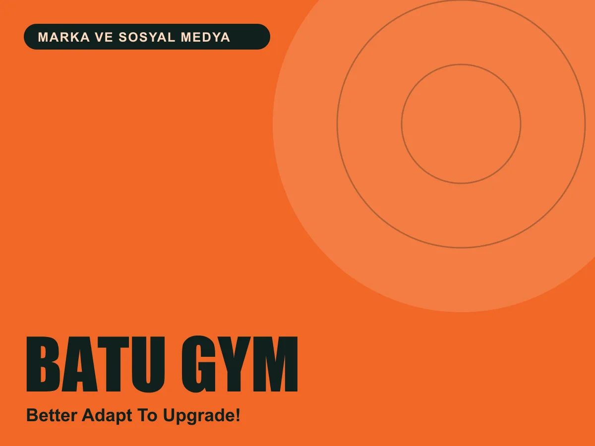

Marka ve sosyal medya
Batu Gym
“Better Adapt To Upgrade!” diyen bir spor salonunun enerjisini sosyal medyaya taşıdık.

Marka
Batu Gym, 2022’den beri hizmet veren bir spor salonu. Sloganı “Better Adapt To Upgrade!”: koşullara uyum sağla, kendini geliştir.
Instagram hesabı salonun vitrini. Ekipmanlar, antrenman anları ve motivasyon mesajları aynı görsel dille, #BetterAdaptToUpgrade etiketiyle bir araya geliyor.
Hesapta neler var
Fitness, Events, Sizden Gelenler, Equipments ve Crew başlıklarıyla düzenlenmiş kalıcı hikâye arşivi.
“Mücadele seni güçlendirir” gibi kısa, güçlü Türkçe mesajlarla markanın sesini taşıyan görseller.
Halter, dumbbell, koşu bandı ve boks torbası gibi salonun gerçek atmosferini gösteren kareler.
Üyelerden gelen paylaşımlar ve etkinlikler, salonu bir topluluğa dönüştüren içerik akışı.
Proje bilgileri
- Müşteri
- Batu Gym
- Hizmet
- Sosyal medya yönetimi, içerik üretimi, görsel dil
- Kuruluş
- 2022
- @b.a.t.u.gym
Bilgiler markanın herkese açık kanallarından derlenmiştir.